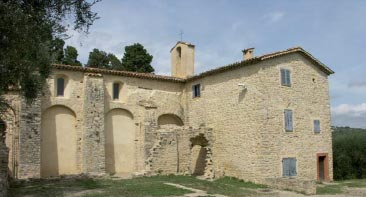
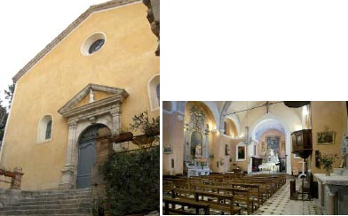
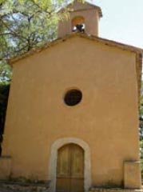

L’héritage religieux - CHÂTEAUNEUF
Monument historique
Classé le 20.08.1986
Notre Dame du Brusc
L’église fait partie d’un ensemble exceptionnel sacré édifié au Ve siècle et au XIe. En partie détruite pendant les guerres de religion, l’église a été reconstruite au XVIIe siècle et remaniée à plusieurs reprises. Restauré au début des années 80, cet ensemble figure parmi les principaux édifi ces pré-romans méridionaux.
A la fin de l’Antiquité, le site du Brusc n’est pas un habitat groupé proprement dit mais présente un rayonnement spirituel amenant de temps à autre d’importants regroupements. La présence d’une source intermittente (qui apparaît à chaque printemps) a pu jouer un rôle. Les fouilles ont attesté l’implantation, au Bas-Empire, d’une église et d’un baptistère, à côté d’un cimetière païen. Elles ont mis à jour dans la nef, sous des tombes médiévales, des sépultures romaines. Sur le site et aux alentours des prospections ont révélé de la céramique et des monnaies romaines (du Ier au début du IVe siècle après J.-C.) ; des contrepoids de pressoir marquent la présence d’une exploitation agricole. Au XIe siècle, une basilique est construite à la place de l’édifice primitif. La source est captée pour couler dans une crypte spécialement aménagée.
L’église actuelle du Brusc présente un plan basilical avec une grande nef centrale, deux étroits collatéraux, un choeur encadré de transept (matérialisé en toiture par la présence d’un clocheton) et d’une abside en demi-cercle. De part et d’autre du choeur se trouvent deux transepts peu profonds, couverts d’une simple voûte en plein cintre. L’abside en demi-cercle est incluse dans un massif polygonal saillant, disposition que l’on retrouve souvent en Provence. La crypte, à demi enterrée, placée exactement sous le choeur, est rectangulaire et divisée en deux parties distinctes.

Église paroissiale Saint Martin
Très certainement construite sur l’emplacement d’un édifice plus ancien, l’église paroissiale Saint Martin est située en contrebas de la place du Bosquet qui intègre actuellement la mairie et le château. Le Baptistère date du VIe siècle. Le portail, donnant accés à l’église, particulièrement décoré, est de style baroque. En 1680, l’église est dédiée à Saint Martin. Le retable du maître-autel représente Saint Martin, Saint Pierre et Saint Paul.
La façade principale, à l’ouest est enduite. La porte de cette façade montre un recouvrement plein cintre, à clef débordante sous un fronton triangulaire. L’édifice comprend une nef unique, accompagnée de chapelles latérales, d’un transept et d’un choeur sur lequel s’ouvre la sacristie. L’ensemble est voûté en berceau, illuminé par deux petites ouvertures et un oculus en façade principale, et enfin, des baies de plus grandes dimensions situées principalement sur les murs gouttereaux. Le clocher-tour est assemblé en assise de pierres dressées. Il porte la date de 1822.
(Datation début XVIIe siècle)

Chapelle de la Sainte Trinité
Elle fut l’église de la Commune du Clermont avant que celle-ci ne soit rattachée à Châteauneuf. De forme rectangulaire, cette chapelle est construite de pierres, enduites. Elle possède un mur d’arcades, aveuglé (issu de l’église dédiée à la Sainte Trinité, XIe siècle), qui est percé de deux portes en bois peintes (dont une possède un encadrement de pierres de taille formant un arc en ogive), et d’une petite baie, formant un arc plein cintre, en partie haute.
La façade principale de la chapelle est percée par un oculus, situé presque en son centre et, par une porte en bois peinte, à deux battants, habillée d’un encadrement de pierres de taille et formant un arc plein cintre. La façade est surmontée d’un clocheton, dans lequel on peut percevoir une cloche en fonte. La chapelle de la Trinité, bien conservée dans son ensemble, s’intègre à un environnement naturel remarquable.
(Datation XIe siècle - XVIIe siècle).
